Qualified people—including selected professors, academy members, legislators, and previous laureates—may nominate.
Global history · science · literature · peace
The Nobel Prize Who changed the world—and who gets remembered?
Enter the archive, test the evidence behind famous awards, and decide what “the greatest benefit to humankind” should mean. Compare discoveries, writing, peacebuilding, and economic ideas across places and generations.
Benefit
to humankind Physics Chemistry Medicine Literature Peace Economics
to humankind Physics Chemistry Medicine Literature Peace Economics
File 01
Start with the institution
Six fields, several committees, one complicated legacy
Alfred Nobel’s 1895 will created prizes in physics, chemistry, physiology or medicine, literature, and peace. The first awards came in 1901. The economics prize was established later by Sweden’s central bank and first awarded in 1969; it is formally a prize “in memory of Alfred Nobel,” not one of the five prizes in his will.
People cannot nominate themselves. The candidate names remain secret for 50 years.
Different prize committees review evidence, consult specialists, and narrow the field.
Announcements happen in October; awards are presented on 10 December.
1901first prizes
50 yearsnomination secrecy
10 Decemberaward day
Oslopeace ceremony
File 02
Compare across fields
A working archive of influential laureates
These are representative, widely known laureates—not an official ranking of the “best.” Filter the archive, then compare the achievement, the evidence, and what changed afterward.
Showing 18 laureate files across all fields.
Physics · 1903Chemistry · 1911
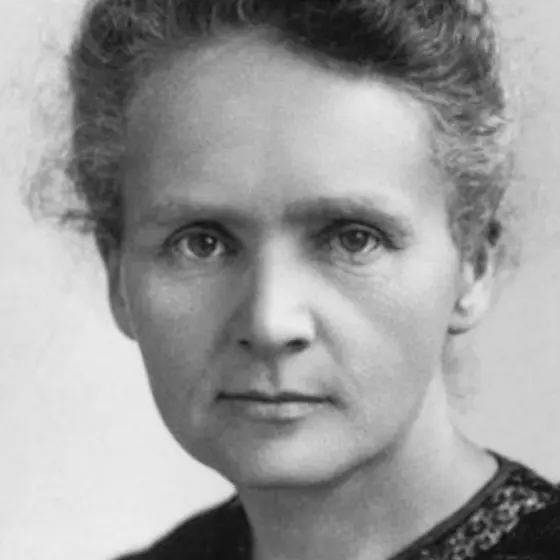
Marie Curie
Poland · France
Helped establish radioactivity as an atomic phenomenon, discovered polonium and radium with Pierre Curie, and became the first person to receive two Nobel Prizes.
Open the evidence file
Why it mattered: Her measurements changed the model of matter and later supported medical imaging and cancer treatment.
Question: How should dangerous discoveries be weighed against their benefits?
Official Nobel recordPhysics · 1921
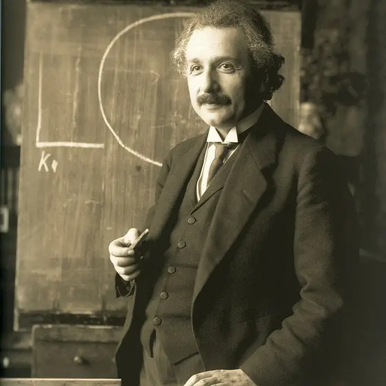
Albert Einstein
Germany · Switzerland
Received the prize especially for explaining the photoelectric effect—evidence that light transfers energy in discrete packets—not for relativity alone.
Open the evidence file
Why it mattered: The idea became foundational to quantum physics and technologies such as solar cells and light sensors.
Question: Why might a committee honor the most experimentally secure part of a scientist’s work?
Official Nobel recordChemistry · 1954Peace · 1962
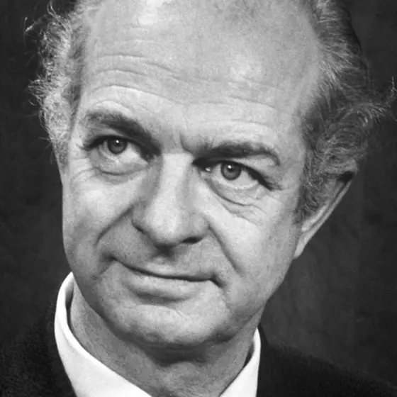
Linus Pauling
United States
Connected chemical bonds to molecular structure, then became a major public campaigner against atmospheric nuclear weapons testing.
Open the evidence file
Why it mattered: He is the only person to receive two unshared Nobel Prizes.
Question: Should expertise in science create a special duty to speak about public risks?
Official Nobel recordMedicine · 1945
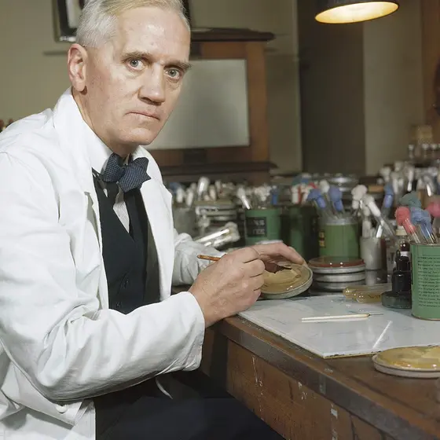
Alexander Fleming
Scotland
Observed that a mold stopped bacteria from growing. Fleming shared the prize with Ernst Chain and Howard Florey, whose work helped turn penicillin into a usable medicine.
Open the evidence file
Why it mattered: Antibiotics transformed treatment of bacterial infections and surgery.
Question: Is the key achievement noticing, explaining, or making a discovery usable?
Official Nobel recordMedicine · 2015
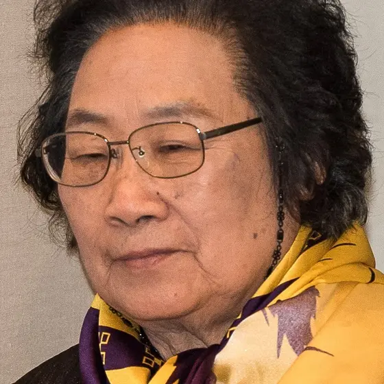
Tu Youyou
China
Led work that drew on traditional Chinese medical texts and modern testing to isolate artemisinin, a powerful treatment for malaria.
Open the evidence file
Why it mattered: Artemisinin-based treatment has saved millions of lives.
Question: How can historical knowledge and controlled experiments strengthen one another?
Official Nobel recordMedicine · 2023
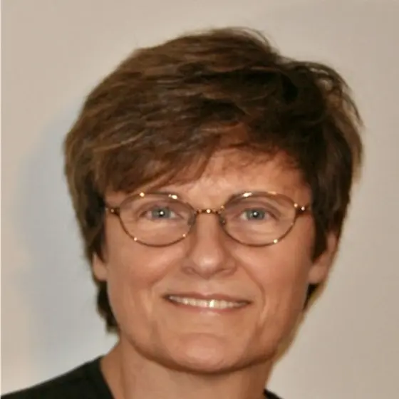
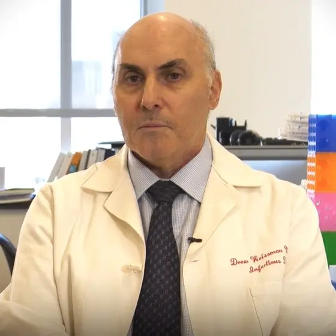
Katalin Karikó & Drew Weissman
Hungary · United States
Discovered how to modify mRNA so it could trigger useful immune responses without causing the same damaging inflammation, enabling effective COVID-19 mRNA vaccines.
Open the evidence file
Why it mattered: Decades of basic research became a platform for fast vaccine development during a global emergency.
Question: How should we value research before its biggest use exists?
Official Nobel recordLiterature · 1993
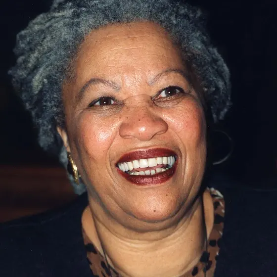
Toni Morrison
United States
Used richly layered novels to explore memory, family, racism, freedom, and Black American life, changing what stories entered the literary center.
Open the evidence file
Why it mattered: Works such as Beloved ask how historical trauma survives inside language and family memory.
Question: Can a novel reveal truths that a timeline cannot?
Official Nobel recordLiterature · 2016
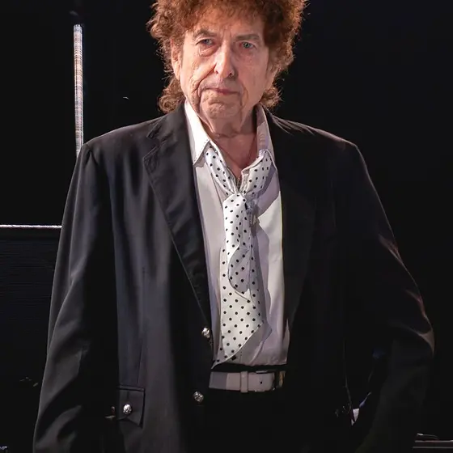
Bob Dylan
United States
Expanded the literary possibilities of popular song through a long career shaped by folk traditions, blues, biblical language, modern poetry, and American storytelling.
Open the evidence file
Why it mattered: His selection sparked a productive argument about whether lyrics belong to literature only when read—or most fully when performed.
Question: What changes when words are carried by melody, rhythm, and voice?
Official Nobel recordPeace · 1964
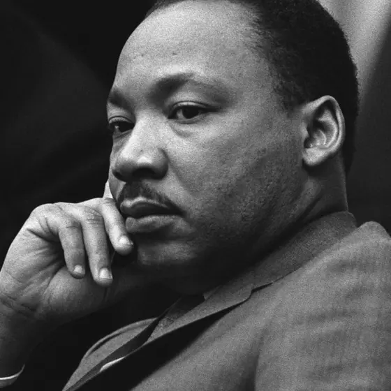
Martin Luther King Jr.
United States
Helped lead a mass, nonviolent movement against racial segregation and voter suppression while connecting civil rights to human dignity.
Open the evidence file
Why it mattered: Organized boycotts, marches, legal challenges, and public argument helped transform U.S. law and public life.
Question: How do discipline and collective action turn moral claims into change?
Official Nobel recordPeace · 2004
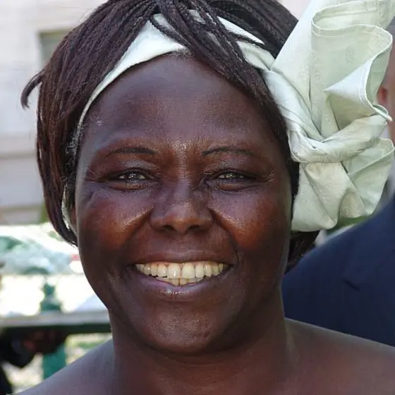
Wangari Maathai
Kenya
Connected environmental restoration, women’s leadership, democratic participation, and peace through the Green Belt Movement.
Open the evidence file
Why it mattered: Tree planting became a practical response to erosion, poverty, exclusion, and political power.
Question: Why can ecological work also be peace work?
Official Nobel recordPeace · 2014
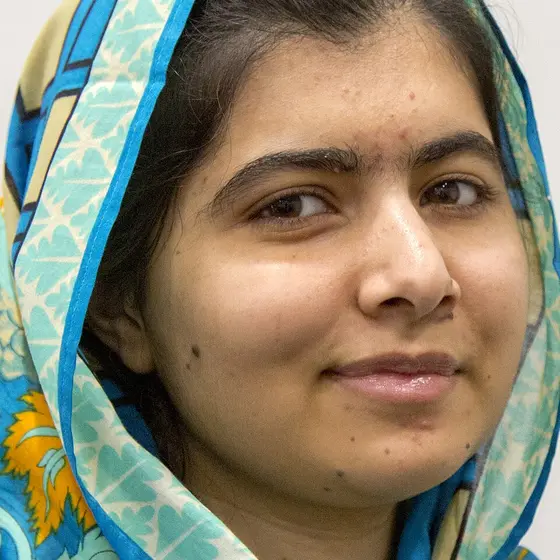
Malala Yousafzai
Pakistan
Advocated for every child’s right to education after surviving an assassination attempt by the Taliban. At 17, she became the youngest Nobel laureate.
Open the evidence file
Why it mattered: Her activism made girls’ access to school a global human-rights issue.
Question: What makes testimony powerful evidence for change?
Official Nobel recordEconomic sciences · 2009
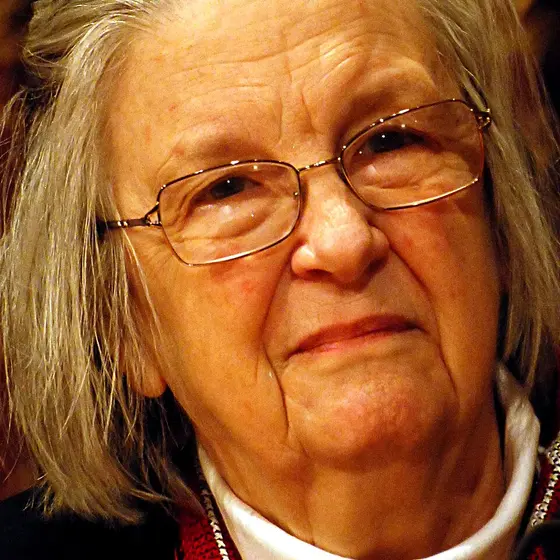
Elinor Ostrom
United States
Used field evidence to show that communities can sometimes govern shared forests, fisheries, and water systems without inevitable collapse or one universal solution.
Open the evidence file
Why it mattered: Her work challenged simplified claims that common resources must always be privatized or controlled from above.
Question: When do local rules outperform one-size-fits-all rules?
Official Nobel recordPhysics · 2018
Donna Strickland
Canada
Developed chirped pulse amplification with Gérard Mourou, a method that stretches, strengthens, and recompresses laser pulses to create extremely intense bursts without destroying the equipment.
Open the evidence file
Why it mattered: The method enabled powerful precision lasers used in research, manufacturing, and corrective eye surgery.
Question: How can changing the timing of energy make a technology safer and more powerful?
Official Nobel recordChemistry · 2020
Jennifer Doudna
United States
Shared the prize with Emmanuelle Charpentier for developing CRISPR-Cas9 into a method for making targeted changes to DNA.
Open the evidence file
Why it mattered: The method gave researchers a faster, more precise tool for studying genes and exploring treatments.
Question: Who should help decide which genetic changes are acceptable?
Official Nobel recordMedicine · 1986
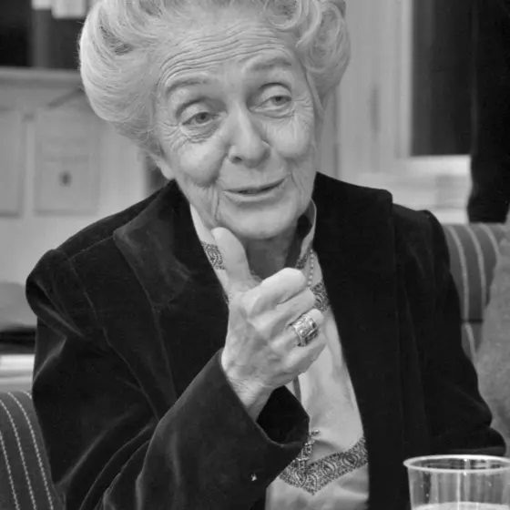
Rita Levi-Montalcini
Italy · United States
Shared the prize with Stanley Cohen for discovering growth factors—chemical signals that help direct how cells grow and develop.
Open the evidence file
Why it mattered: Nerve growth factor helped scientists understand how cells communicate during development and disease.
Question: Why can a signal between cells matter as much as the cells themselves?
Official Nobel recordLiterature · 1913
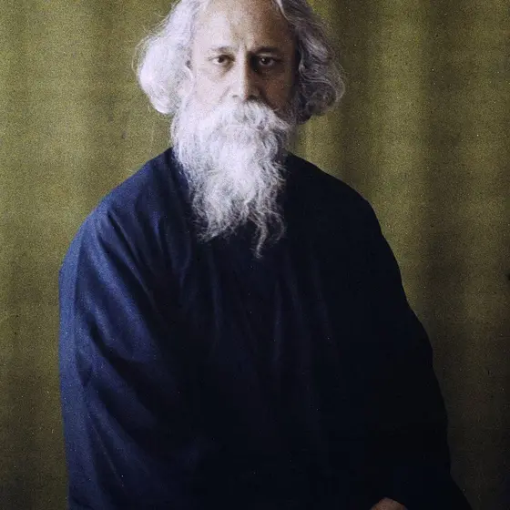
Rabindranath Tagore
India
Wrote poetry, songs, stories, plays, and essays rooted in Bengali life while building bridges between Indian and Western literary traditions.
Open the evidence file
Why it mattered: Tagore became the first Asian Nobel laureate and brought Bengali literature to a much wider international readership.
Question: What can be gained—and lost—when a writer translates their own work?
Official Nobel recordPeace · 1993
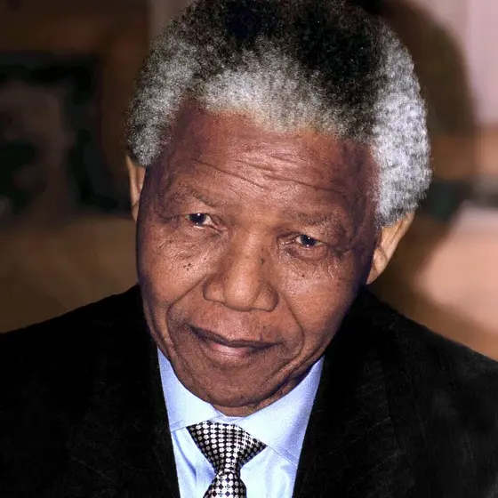
Nelson Mandela
South Africa
Shared the prize with F. W. de Klerk for helping end apartheid and lay the groundwork for democratic government in South Africa.
Open the evidence file
Why it mattered: Negotiation helped move the country toward universal voting rights after decades of racist rule and 27 years of Mandela’s imprisonment.
Question: What makes negotiation possible after long conflict and injustice?
Official Nobel recordEconomic sciences · 1998
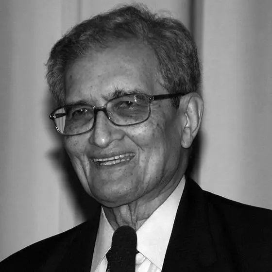
Amartya Sen
India · United Kingdom
Connected economics to ethics by studying how poverty, famine, inequality, rights, and real opportunities shape human well-being.
Open the evidence file
Why it mattered: His work showed why measuring income alone cannot fully explain whether people can live healthy, free, and capable lives.
Question: What should count when a society measures whether people are doing well?
Official Nobel record
File 03
Interactive decision lab
Take a seat on a fictional prize committee
Real Nobel committees do not use this scoring system. This classroom model exposes the value judgments hidden inside words like “benefit,” “evidence,” and “lasting.” Adjust the priorities, then see which fictional candidate your rules favor.
Public healthDr. Amara Okafor
Coordinates a low-cost clean-water system already used by 18 million people across several countries.
PhysicsDr. Ilya Moreno
Publishes strong evidence for a new battery material that could transform energy storage, but it has not yet left the laboratory.
PeaceSanaa Bekele Network
Builds locally led ceasefire and school-reopening agreements in a region where violence has fallen for four years.
Your framework currently favorsReviewing the files…
File 04
Read awards critically
A prize is evidence of recognition—not a complete map of merit
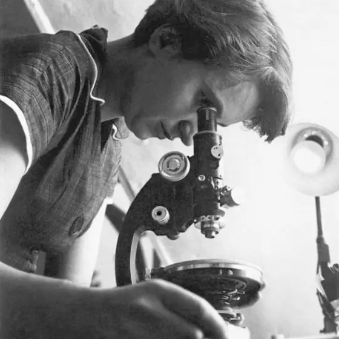
Rosalind Franklin
Her X-ray diffraction work was crucial to understanding DNA’s structure. The 1962 medicine prize went to Watson, Crick, and Wilkins after Franklin had died. Nobel Prizes generally are not awarded posthumously, but the history also raises questions about consent, collaboration, and whose work gets centered.
Explore the DNA & Heredity lesson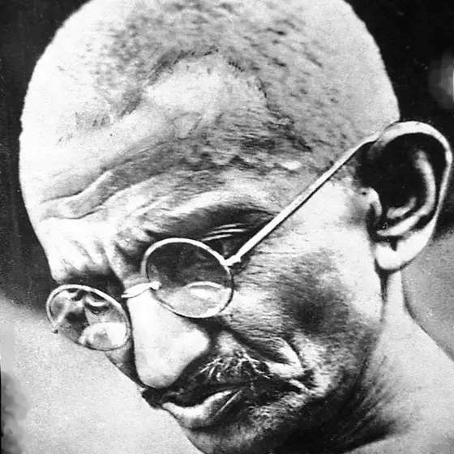
Mahatma Gandhi
Gandhi was nominated repeatedly for the peace prize but never received it. The Norwegian Nobel Committee has publicly discussed this as a major omission. Awards can reveal the limits and assumptions of institutions as clearly as their selections do.
Read the Nobel organization’s accountWhat counts as a field?
Mathematics, environmental science, computing, education, and many arts have no original Nobel category. Economics entered through a later memorial prize. Categories make achievements visible—but also decide what kinds of achievement can be seen.
Compare the official prize fields
Final file
Make the case
Exit review
Choose the best answer, then use the explanation to repair your thinking.
0 of 5 checked1. Which statement about the economics prize is accurate?
2. Which rule belongs to Nobel nominations?
3. What work was singled out in Einstein’s 1921 prize?
4. Which laureate studied how societies measure well-being beyond income alone?
5. What is the most defensible way to interpret a Nobel Prize?
Sources
Follow the record
Official records and portrait credits
- NobelPrize.org: About the Nobel Prize — origins, fields, dates, and current totals.
- NobelPrize.org: Nomination and selection — eligible nominators, calendar, and 50-year secrecy rule.
- Each dossier links directly to the laureate’s official Nobel record so students can check the award year, prize motivation, collaborators, and evidence.
Open portrait credits and licenses
- Marie Curie — unknown photographer, public domain.
- Albert Einstein — Ferdinand Schmutzer; restoration by Adam Cuerden, public domain.
- Linus Pauling — Nobel Foundation, public domain.
- Alexander Fleming — Imperial War Museums official photographer, public domain.
- Tu Youyou — Bengt Nyman, CC BY 2.0; cropped for display.
- Katalin Karikó — Krdobyns / Innisfree987, CC BY-SA 4.0; cropped for display.
- Drew Weissman — Thorne Media, CC BY 3.0; cropped for display.
- Toni Morrison — John Mathew Smith, CC BY-SA 2.0; cropped for display.
- Bob Dylan — Raph_PH, CC BY 2.0; cropped for display.
- Martin Luther King Jr. — Yoichi Okamoto / LBJ Library, public domain.
- Wangari Maathai — Kingkongphoto, CC BY-SA 2.0; cropped for display.
- Malala Yousafzai — Simon Davis / DFID, CC BY 2.0; cropped for display.
- Elinor Ostrom — Holger Motzkau, CC BY-SA 3.0; cropped for display.
- Rosalind Franklin — MRC Laboratory of Molecular Biology / MagentaGreen, CC BY-SA 4.0; cropped for display.
- Mahatma Gandhi — unknown photographer, public domain.
- Donna Strickland — Bengt Nyman, CC BY 2.0; cropped for display.
- Jennifer Doudna — Christopher Michel, CC BY-SA 4.0; cropped for display.
- Rita Levi-Montalcini — Kurt Hagblom; restoration by Adam Cuerden, public domain; cropped for display.
- Rabindranath Tagore — Georges Chevalier, CC BY 4.0; cropped for display.
- Nelson Mandela — Kingkongphoto, CC BY-SA 2.0; cropped for display.
- Amartya Sen — Elke Wetzig / ChaudhryAzan, CC BY-SA 3.0; cropped for display.
Laureate summaries on this page are original paraphrases written for instruction. Portraits are locally optimized, square display crops of the credited Wikimedia Commons files above. The page does not reproduce Nobel medals or protected speeches. Names and prize facts link to official records.